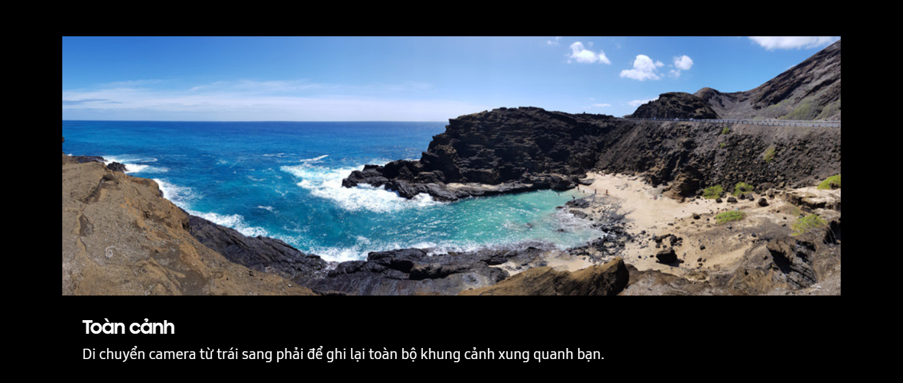
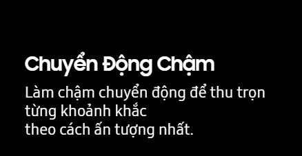
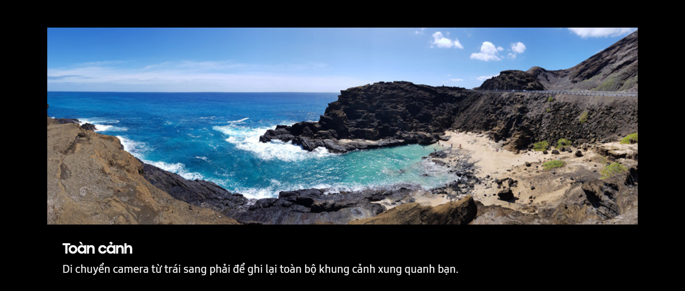
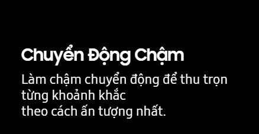
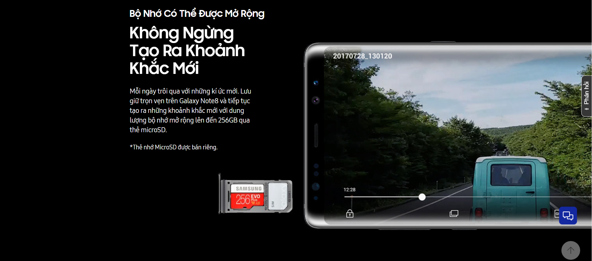
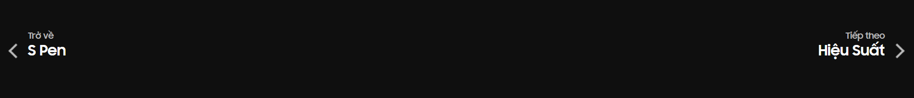

Ổn Định Để Lấy Nét.
Camera Kép Với Công
Nghệ Chống Rung
Quang Học (OIS) Kép.


Zoom Quang Học 2x + Chống Rung Quang Học (OIS) Kép
Mỗi Khoảnh Khắc, Chi Tiết và Sắc Nét

*Ảnh trên màn hình được chụp bởi Galaxy Note8

Xóa Phông Chủ Động
Chế Độ Xóa Phông Tùy Chọn
Lấy nét trực tiếp như mong muốn ngay trước khi ấn nút chụp. Tính năng lấy nét trực tiếp cho phép chụp ảnh xóa
phông
hoàn hảo để làm nổi bật chủ thể. Và nếu chưa thực sự hài lòng, bạn có chức năng tuỳ chọn
để điều chỉnh lại mức độ mờ sau đó.
*Ảnh trên màn hình được chụp bởi Galaxy Note8

Chụp Ảnh Kép
Chụp Nhanh Ngoài Khung Hình
Khi bạn chụp ảnh ở chế độ lấy nét trực tiếp, Camera kép với ống kính góc rộng sẽ cùng lúc ghi lại cả khung
cảnh
đang diễn ra ngoài khung hình, để bạn lưu giữ toàn bộ khung cảnh, không bỏ lỡ bất cứ ai.
*Ảnh trên màn hình được chụp bởi Galaxy Note8


Camera Làm Chủ
Bóng Đêm


Camera Chụp Thiếu Sáng
Sẵn Sàng Thách Thức Bóng Đêm
Ảnh đẹp hoàn hảo ngay cả khi chụp vội trong đêm tối. Ống kính góc rộng của Galaxy Note8 với điểm ảnh
lớn 1.4µm và ống kính sáng khẩu độ f/1.7 giúp thu nhiều ánh sáng hơn, đồng thời cho khả năng lấy nét
nhanh và chính xác nhờ cảm biến Dual Pixels.
*Ảnh trên màn hình được chụp bởi Galaxy Note8

Camera Trước Bắt Trọn Mọi
Khoảnh Khắc
*Hình ảnh được chụp bởi Galaxy Note8


 



Camera selfie


Camera Trước
Camera Trước Theo Chân Từng Trải Nghiệm
Bật camera trước chụp selfie hoặc wefie, bạn sẽ luôn sẵn sàng để chia sẻ. Ống kính sáng ghi lại từng
chi tiết sắc nét ngay trong điều kiện thiếu sáng, trong khi chế độ lấy nét tự động thông minh sẽ giúp
nhận diện mọi khuôn mặt trong khung hình.
*Ảnh trên màn hình được chụp bởi Galaxy Note8

Bắt Trọn Mọi Khoảnh Khắc
Cuộc Sống Cùng Galaxy
Note8
Xem thêm nhiều khoảnh khắc được ghi lại bởi Galaxy Note8 trong bộ sưu tập.
*Hình ảnh được chụp bởi Galaxy Note8
Hình ảnh từ
Galaxy Note8
Xem những khoảnh khắc được ghi lại bởi Galaxy Note8 trong thư viện hình ảnh
ĐI ĐẾN THƯ VIỆN 

Trang chủ / Smartphones / Galaxy Note8
.
.
Copyright© 1995-2018 SAMSUNG All Rights Reserved.
Bản quyền © 1995-2018 Samsung bảo lưu mọi quyền.
Công ty TNHH Điện Tử Samsung Vina
Giấy CNĐT: 411043002319, do UBND TP. Hồ Chí Minh cấp ngày 28/8/2007
Địa chỉ: Số 2, đường Hải Triều, Phường Bến Nghé, Quận 1, TP. Hồ Chí Minh
Điện Thoại: +84-2839157310
Trang web này được hiển tốt nhất khi sử dụng trình duyệt Microsoft Internet Explorer 9 hoặc cao hơn, hoặc phiên bản mới nhất của trình duyệt Google Chrome và trình duyệt Mozila Firefox.